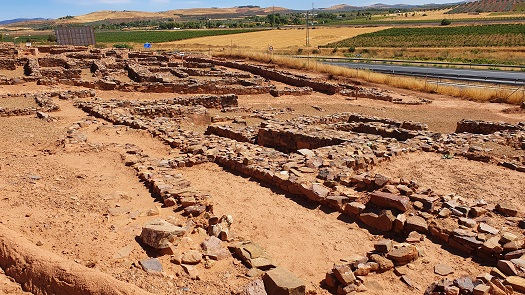
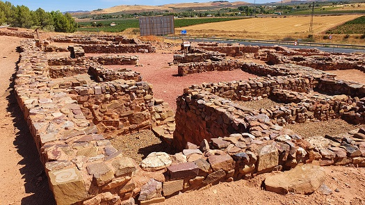
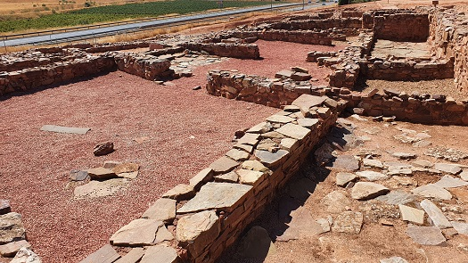
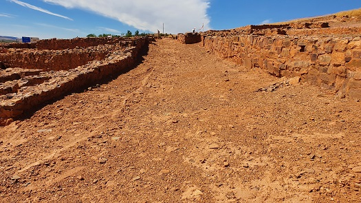

|
CIUDAD
REAL ROMANO
-
-
Con la llegada de los romanos se inició un
largo proceso de conquista y posterior dominio cultural del que han
quedado restos tan interesantes como
los de
Sisapo,
en La Bienvenida, una aldea de Almodóvar del Campo,
Alces, la actual Alcázar de San Juan, Almadén,
Granátula de Calatrava,
Carcovium o Cararcuel, Laminium la actual Alhambra..............
- - En Valdepeñas se localiza la
ciudad íbera del Cerro de las Cabezas, habitada del siglo
VII al III a.e.c. Es una de las pocas ciudades íberas conservadas
íntegramente. Destacan sus sistemas defensivos y la buena
conservación que presentan en general sus estructuras. Se trata de
un oppidum Oretano de 14h rodeado por una muralla de cajas de 1.600m
de longitud construida en el siglo V a.e.c, y remodelada a lo largo
del siglo IV a.e.c.
- Santuarios, áreas sacras, almacenes, y una
red urbana compleja, son elementos que podemos disfrutar en nuestra
visita a la ciudad Ibera.
- Su Centro de interpretación a través es de
sus 7 salas nos muestra los pormenores de la vida Ibera-Oretana del
Yacimiento del Cerro de las Cabezas.
|
 |
 |
| |
|
|
 |
 |
De época romana en Valdepeñas destaca la
bodega romana de El Peral. El hallazgo se produjo en 2020, durante las
obras de construcción de una rotonda.
Los restos arqueológicos de la villa romana se ubican en la entrada al
paraje Baños de El Peral y están datados inicialmente en el siglo I,
destaca de ella la inscripción hallada con las siglas
AMAICIVS FRVVS·V·S·, que posiblemente hizo referencia al
nombre del fundador de la bodega. La villa romana de época imperial que
dio origen al complejo así como las ampliaciones tardías, se van
sucediendo a través de los siglos III y IV.
En octubre de 2023 se descubrió un recinto termal con su con su
frigidarium, tepidarium y caldarium.
-
- En Terrinches se halla la villa romana del
Calvario y
La Ontavia. En la villa de Onatavia se han sacado a la luz los restos de unas termas en
muy buen estado de conservación. También
se hallado una calzada romana que atraviesa la comarca del Campo de
Montiel. Un tramo de la Vía Augusta.
-
- - El
origen de Alcázar de San Juan se pierde en la Edad de Piedra. Algunos
historiadores la asocian con la antigua "ALCES", ciudad prerromana que
conquistó el pretor Sempronio Graco, cuando se sometió esta región a Roma.
En el itinerario de Marco Antonio se la designa con el nombre de "MURUM".
De esta época se conservan los mosaicos romanos de la antigua villa de los
siglos I y II, cercana a la iglesia de Santa María la Mayor, sobre la que
existe la hipótesis de que fue construida con los restos de un templo.
También destacan los talleres y almacenes de esta villa que fue
ampliándose hasta formar un núcleo de población. Actualmente los
mosaicos pueden verse en el Museo Municipal y los restos de la villa en
la calle de Gracia.
- En agosto de 2015 en el yacimiento de Piédrola se ha confirmado la
existencia de lo que parece una villa romana de época imperial.
-
- - Un vecino de Corral de
Calatrava en febrero de 2017, ha descubierto en este término
municipal dos piezas con inscripciones romanas, pertenecientes al siglo IV, en el paraje conocido como Los Villares, que podrían pertenecer al
asentamiento romano de Carcovium ubicado en esta misma zona.
-
- - En Alhambra, el enclave
oretano-romano de Laminivm. Oppidum más austral de la tribu carpetana y
cabeza del Ager Laminitanus, dentro del territorio celtíbero. Plinio el
Viejo y Ptolomeo hacen referencias a ella en diversas ocasiones. La
Laminium romana adquirió el estatus de municipio flavio. Formaba parte
de la red viaria romana principal, como un importante nudo de
comunicaciones. En el llamado Itinerario de Antonino está ubicado en las
vías: XXIX, Caesaragusta- Emérita Augusta. XXX, Laminio- Toletum. XXXI,
Laminio- Libisosa.
- Destaca su museo arqueológico
y las esculturas e inscripciones de la plaza de España. La necrópolis
visigoda. Las jornadas ibero-romanas Lamitanas.
- En enero de 2016, los
arqueólogos han descubierto restos importantes de época ibera y romana.
- Entre los restos constructivos
destacan dos viales con niveles de pavimentación que delimitan los muros
de un gran edificio de planta rectangular en cuyo interior se han podido
documentar valiosos materiales. Los trabajos de excavación han
posibilitado el descubrimiento de una nueva villa romana de época
alto-imperial. En noviembre 2020 los arqueólogos ha hallado una máscara
teatral del siglo I, en la antigua ciudad romana de «Laminium». La
pieza, realizada en terracota, en perfecto estado de conservación, se ha
encontrado en el «puticulum» o vertedero romano de esta localidad.
-
- - La Calzada Romana de
Chillón. Se conservan unos trescientos metros de largo y unos tres metros
de ancho, correspondientes a la Calzada de Mérida a Zaragoza y que pasaba
por la ciudad romana de Sisapo según los itinerarios de Antonino.
-
- - El yacimiento
arqueológico de La Motilla del Azuer, está situado en la localidad de
Daimiel, puede considerarse un verdadero poblado prehistórico, de la Edad
del Bronce, que data de los siglos XXIII y XV a.e.c. Yacimiento con muros
de mampostería que conservan más de 8m de alzado, le confieren un
carácter único y monumental. La fortificación, con un diámetro de unos 40m., está integrada por tres espacios amurallados y un gran patio. El
núcleo central está formado por una torre de mampostería de planta
cuadrada, a cuyo interior se accede mediante rampas embutidas en estrechos
pasillos.
-
- - El puente de origen romano de
Malagón.
- - El puente de origen romano de la localidad de
Socuéllamos, a unos 11km. de la
población en dirección a Pedro Muñoz.
-
- - En Albadalejo se
localiza la villa romana de Casas de Paterna y la villa de Puente de la
Olmilla. La villa de Olmilla fue descubierta en 1973, excavada entre
1985 y 1990, fecha en la que se decidió el arranque de los más de 239 m2
de pavimentos de mosaicos polícromos con temáticas geométricas,
figuradas y mitológicas. Fue abandonada. En 2015 se procedió a una
primera limpieza y vallado que contribuyó a que en 2016. En julio de
2020 se retoma su conservación. Foto: Objetivo CLM. (OPPIDA.
2019).
- - En Santa Cruz de Mudela, en
junio de 2013, han descubierto una escultura íbero-romana de un animal
mitológico, un grifo, y un fragmento de un monumento funerario romano, un pulvino, en el paraje de Las Virtudes. Ambos vestigios, que son
únicos en la provincia de Ciudad Real y muy raros en el conjunto de
Castilla-La Mancha, podrían estar relacionados con la ciudad perdida de Ad
Turres.
- - En la Vía Augusta, Vasos de Vicarello,
a su paso por Ciudad Real, destacamos los importantes
establecimientos vilicarios que en torno a la vía se erigieron entre
Mentesa Oretana (Villanueva de la Fuente) y Mariana (Puebla del
Príncipe); las villas romanas de Casa Paterna y Puente de la Olmilla en
Albaladejo, El Calvario y La Ontavia en Terrinches.
-
- - En el municipio de Caracuel de
Calatrava en octubre de 2022, se hallaron 473 monedas romanas en
una vasija de cerámica del siglo IV, en el yacimiento del 'Cerro de
los Miradores'. Este enclave ya aparece citado como 'Carcuvium' en
el Itinerario Antonino, del siglo III.
|